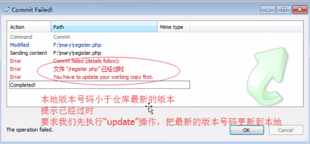
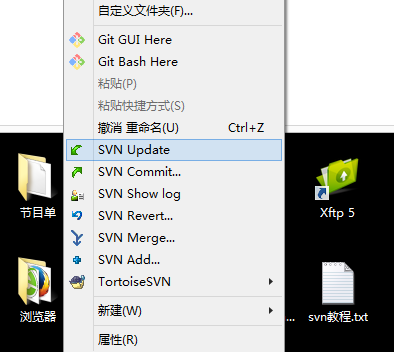
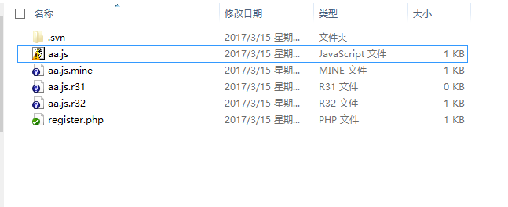
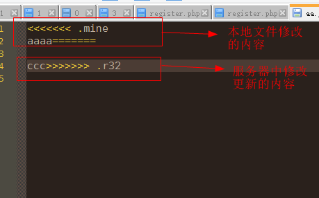

A和B两个人从服务器获取同一个文件，此时文件版本都和服务器相同；
当A在文件里第10行修改了代码，未提交；
B又在第10行修改了代码，提交了；
此时当A提交代码的时候，提示提交失败 “有冲突”

因为此时版本库文件已经跟新，所以需要在当前目录空白处点击右键选择“SVN update”更新一下

此时当前目录会出现 多个文件

里面文件是这个样子
 带一个mine后缀的文件是当前自己的文件；
带一个mine后缀的文件是当前自己的文件；
带最大版本号数字的是版本库最新的文件；
带小点数字的是版本库升级前的文件
带黄色感叹号的是自己文件和版本库文件对比 ，也就是合并的
这几个文件是共开发人员来对比查看的，其中黄色感叹号是更新合并后的效果看完之后其他几个文件需要删除，黄色感叹号的文件保留；

这个文件就是合并后的效果，开发人员需要手动把里面的符号去掉，去掉改正成一行之后进行提交